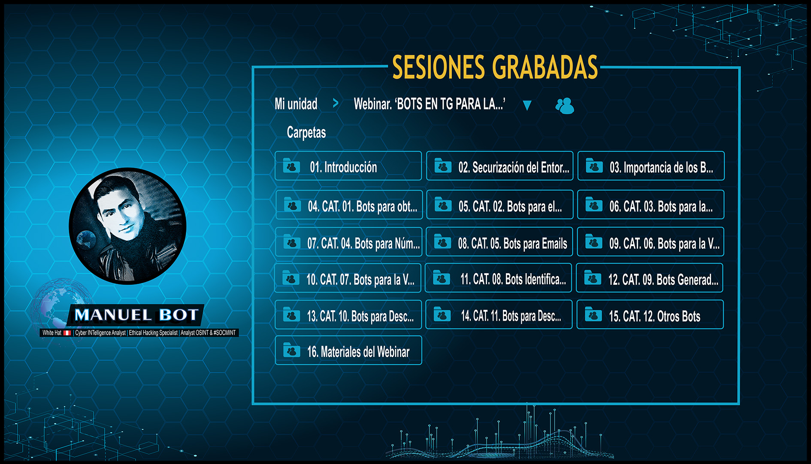

¿TE PERDISTE EL WEBINAR OSINT:
BOTS EN TG PARA INVESTIGACIONES OSINT?

Te INVITAMOS A QUE PUEDAS ACCEDER A ESTAS SESIONES GRABADAS.
LO QUE APRENDERÁS:
⭐ HABLAREMOS SOBRE LA IMPORTANCIA DE LOS BOTS PARA LAS INVESTIGACIONES OSINT.
⭐ A CONOCER EL USO DE LOS BOTS PARA LA RECOPILACIÓN DE INFORMACIÓN.
⭐ ADEMÁS DE TENER ACCESO DE LOS BOTS QUE MANUELBOT HA RECOPILADO PARA UD.
INCLUYE:
📘 PRESENTACIÓN DE LA DIAPOSITIVA USADA EN EL WEBINAR.
📘 MÁS DE UNA COLECCIÓN DE 40 BOTS EN TELEGRAM DE DISTINTAS CATEGORÍAS.

INFORMACIÓN GENERAL DE WEBINAR:
REQUISITOS PARA EL APRENDIZAJE:
👨🏻💻 CONTAR CON CORREO ELECTRÓNICO PARA EL ACCESO AL WEBINAR.
👨🏻💻 CONTAR CON UNA COMPUTADORA O EQUIPO PORTATIL PARA EL DESARROLLO DEL LABORATORIO.
Descripción:
La aplicación de mensajería de Telegram es hoy una de las más utilizadas.
Su popularidad creció gracias a la privacidad, seguridad que brinda dicha aplicación y a la particular característica de Telegram,
que permite utilizar BOTS creadas por terceros (Bots), sin necesidad de instalar nada, ya que estas se agregan como si se tratara
de un contacto más con el que mantenemos una conversación. Estas acciones están totalmente automatizadas y están preparadas para
dar respuesta dependiendo de la orden que les demos,puesto que no hay nadie detrás de ellas.
Su popularidad creció gracias a la privacidad, seguridad que brinda dicha aplicación y a la particular característica de Telegram,
que permite utilizar BOTS creadas por terceros (Bots), sin necesidad de instalar nada, ya que estas se agregan como si se tratara
de un contacto más con el que mantenemos una conversación. Estas acciones están totalmente automatizadas y están preparadas para
dar respuesta dependiendo de la orden que les demos,puesto que no hay nadie detrás de ellas.
El punto radica en que no todo usuario de dicha aplicación cuenta con estos Bots, para la búsqueda de información de Fuentes Abiertas
(OSINT), ni tampoco sabe configurar la privacidad y seguridad de la misma, ni mucho menos sabe que canales o grupos existen en Telegram
que se dedican exclusivamente al OSINT, a raíz de esto es que surgió la necesidad de enseñar todos estos temas a través de este Webinar
técnico de formación denominado "BOTS EN TELEGRAM PARA LAS INVESTIGACIONES OSINT".
Yo soy MANUEL TRAVEZAÑO ('Manuel Bot'), Peruano, Analista e investigador de Ciberinteligencia, Docente y Ponente en inteligencia en Fuentes Abiertas (OSINT),
desarrollador de Herramientas Open Source para OSINT, creador de diversas Plataformas OSINT para la investigación para SOCMINT y que a la fecha
eh dado disertaciones en eventos Nacionales como internacionales como ANALISTA y ESPECIALISTA en OSINT.
Con toda esta experiencia en investigación OSINT, es que he creado este Webinar exclusivo especialmente para ti.
¡Empieza a aprender ya mismo!
¿Cómo puedo adquirir la grabación del Webinar?
⭐ NACIONALES (PERÚ):
S/. 15.00
⭐ INTERNACIONALES:
US$ 7.00
Métodos de Pago:
💥 NACIONALES (Perú): GIRO, YAPE, PLIN O TRANSFERENCIA BANCARIA.
Cuenta Simple Soles en Interbank: 898 3185789286Cuenta Simple Soles en Banco de la Nación: 04-055-851951
💥 INTERNACIONALES PAGO VÍA PAYPAL.
¿YA REALIZASTE EL PAGO?
💥 ENVÍE LA CAPTURA DE PANTALLA O VOUCHER DEL PAGO AL SIGUIENTE CORREO ELECTRÓNICO:
manuelbot59@gmail.com
💥 Y ¡LISTO!
manuelbot59@gmail.com
💥 Y ¡LISTO!
¡MUCHAS GRACIAS POR FORMARTE CONMIGO!
¡ADEMAS!
EN LA ACTUALIDAD, TIENES ACCESO DE FORMA GRATUITA A LEER TODAS MIS INVESTIGACIONES QUE EH REALIZADO A TRAVÉS DE:
🔎 WEBSITE PERSONAL
🔎 TWITTER
🔎 CANAL EN TELEGRAM
🔎 YOUTUBE
🔎 GRUPO EN TELEGRAM
Atentamente: